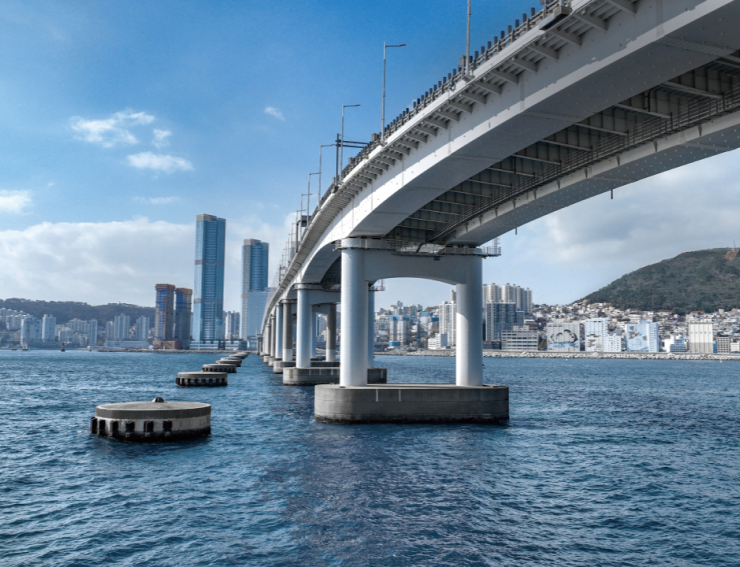

도시개발
쾌적한 도시환경 조성, 상업, 생태, 문화를 포함한 전역의
분야에 대하여 혁신적 개발을 진행하고 있습니다.
대한민국의 새로운 개발, 그 중심에 태영건설이 함께합니다.
주요 공사 실적
-
창원 유니시티
-
위치 : 창원시 의창구 중동, 북면 감계리
일원
- 대지면적 : 1,062,083㎡
-
사업내용 : 공동주택 300,981㎡, 상업용지
54,013㎡,
지원시설 82,88㎡,
도시기반시설 219,800㎡,
공원/녹지
305,987㎡
창원 유니시티
-
광명 유플래닛
-
위치 : 광명 역세권 택지지구 내 복합단지
- 대지면적 : 311,286㎡
-
사업내용 : 공동주택 280,131㎡, 판매시설
10,228㎡,
업무시설 20,865㎡
광명 유플래닛
-
전주 에코시티
- 위치 : 전라북도 전주시 송천동 일원
- 대지면적 : 1,988,467㎡
-
사업내용 : 공동주택 492,976㎡, 임대주택
131,453㎡,
단독주택 97,197㎡,
상업시설 37,895㎡, 업무시설 3,030㎡
전주 에코시티
주택사업
태영의 아파트 브랜드인 데시앙은 안락한 공간 설계와 세련되고
섬세한 디자인을 추구하여
고객에게 최적의 솔루션을
제공하고 보다 나은 주거환경을 만들기 위해 끊임없이
노력합니다.
주요 공사 실적
-
전주 에코시티 데시앙 7,12BL
-
위치 : 전라북도 전주시 덕진구 세병로
- 대지면적 : 216,774㎡ (1,351세대)
-
사업내용 : 공동주택 / 지하2층~지상 29층
전주 에코시티 데시앙 7,12BL
-
용산 데시앙 포레
- 위치 : 서울시 용산구 효창원로 227
- 대지면적 : 15,424.10㎡ (276세대)
- 사업내용 : 지하 3층 ~ 지상 14층
용산 데시앙 포레
-
마산 메트로시티 Ⅱ
-
위치 : 경상남도 마산회원구 양덕서로 30
- 대지면적 : 450,263㎡ (2,127세대)
- 사업내용 : 공동주택 / 지하3층~55층
마산 메트로시티 Ⅱ
SOC
태영건설은 안정적인 재원 조달과 우수한 기술력을 바탕으로
환경시설, 도로, 항만, 철도 등의 사회기반시설 확충에
기여하며, 신뢰를 바탕으로 한 사업 능력을 인정받아왔습니다.
주요 공사 실적
-
인천광역시 만수공공하수처리시설
증설
-
위치 : 인천광역시 남동구 서창동 500-161
일원
-
사업내용 : 공공하수처리시설(증설)
Q=35,000㎥/일
하수처리수재이용시설(신설)
Q=50,000㎥/일
기존시설(Q=70,000㎥/일) 통합운영 포함
인천광역시 만수공공하수처리시설 증설
-
창원 동읍 산업단지
-
위치 : 경상남도 창원시 의창구 동읍
덕산리 657번지 일원
- 대지면적 : 250,779㎡
-
사업내용 : 산업용지, 복합ㆍ물류용지,
주거ㆍ지원용지
창원 동읍 산업단지
-
인주 일반 산업단지
-
위치 : 충청남도 아산시 인주면 걸매리
670번지 일원
-
대지면적 : 산업단지 - 1,816,700㎡
지구외연결도로 - 1,577㎡
-
사업내용 : 음식물류폐기물 자원화,
재활용품 선별,
대형폐기물 처리,
하수슬러지 자원화 및 감량화
인주 일반 산업단지
건축사업
영등포의 넘버원 랜드마크
코레일유통 본사 사옥
건립공사
첨단공법과 기술력으로 건립한 도시 대표 빌딩
코레일유통 본사 사옥은 서울 영등포구 당산동에 위치하고
있으며 지하 4층 ~ 지상 20층 규모의 빌딩입니다.
넘버원(No.1)을 형상화한 독특한 외관 디자인으로 코레일유통의
기업 위상을 제고하는 상징이자 지역의 넘버원 랜드마크로
자리매김하려는 자부심을 디자인으로 녹여 비즈니스 랜드마크
역할을 하고 있습니다. 반도건설은 국책사업과 민간사업 등
대규모 컨소시움 건설에 도전하여 어떤 환경변화에도 대응할 수
있는 건설기업으로 발전하고 있습니다.
고등지구 첫 지식산업센터
성남 고등지구 반도 아이비밸리
서울 근교 동남권에서 선보이는 첫 번째 지식산업센터
반도 아이비밸리는 성남시 고등동 518-10 일원에 지하 3층~지상
8층 규모로 조성된 반도건설의 첫 번째 지식산업센터입니다.
지하 1층~지상 2층에 반도건설의 브랜드상가인 유토피아를 함께
분양하여 입주기업의 임직원들이 멀리 나가지 않고도
문화·여가생활을 모두 누릴 수 있도록 편의를 제공했습니다.
반도건설은 그동안 주상복합과 상업시설 등을 공급하며 축적한
건축기술과 노하우를 적용해, 우수한 품질로 최고의 가치를
제공하고 있습니다.
인천아시아게임의 상징
인천아시아경기대회
문학경기장 수영장
인천광역시 최대 규모의 수영장 건설
2014 인천아시안게임 경기장 건설의 일환으로 지어진 대지면적
18,600㎡, 연면적 18,183㎡, 지하 1층~지상3층 규모의
수영장입니다. 이 경기장은 2014 인천 아시안 게임의 수영 종목
게임을 개최할 목적으로 수영과 다이빙 경기장으로
사용되었으며, 인천에서 가장 큰 규모의 수영장입니다. 주요
시설로는 실내에 경영풀(50m*10레인), 보조풀(50m*6레인),
다이빙풀(30m*25m), 다이빙 지상훈련장 등이 건설되며, 실외에
갤러리마당, 이벤트마당, 물빛마당 등이 있습니다.
토목사업

부산 해안순환도로의 완성
부산 남항-영도
남향대교 건설공사
해안순환도로망 구축으로 도심으로의 접근성 향상
남항대교는 부산광역시 서구 안남동과 영도구 영선동을 연결하는
해상 다리입니다. 총 길이는 1,941m로 기존에 존재하던
영도대교가 노후화되어 대체 교량을 건설할 필요성과 영도
동삼지구 개발과 항만확충으로 인한 물동량을 처리하기 위해
1997년부터 2008년까지 11년에 걸쳐 건설되었습니다. 반도건설은
남항대교 건설을 통해 도시를 연결하며 이동시간을 단축하고
지역주민의 생활권을 하나로 묶어주는 역할을 하며 국가
경쟁력에 이바지했습니다.
동ㆍ서부산을 잇는 물류동맥
부산 해안순환도로망
천마산터널 건설공사
영남과 호남을 잇는 남해안 골든라인 구축
천마산터널은 부산 신항에서 녹산·신호 산업단지를 거쳐
을숙도대교, 남항대교, 북항대교, 광안대로를 잇는 총연장
52㎞의 부산 남부해안순환도로(항만배후도로) 건설사업의
일환입니다. 터널 1.5㎞, 지하차도 1.2㎞, 교량 0.4㎞를 포함해
왕복 4차로의 자동차전용도로 3.28㎞를 건설해 30년간 운영하는
사업으로, 반도건설은 2019년 4월부터 현재까지 운영사업에도
참여하고 있습니다. 국가 기간시설인 각종 도로와 고속도로,
교량, 철도 공사 등에 참여하여 지역 간 교통난을 해소하고
기술력을 인정받고 있습니다.
친환경 녹지공원 개발
부산항 재개발사업
친수공원 조성공사
축구장 면적 약 17배 규모의 공원 조성
부산항 북항 1단계 재개발은 2006년 부산신항이 개장하면서
유휴화된 북항(153만㎡)을 시민들에게 친수공간으로 제공하기
위해 2008년부터 시작된 국내 첫 번째 대규모
항만재개발사업입니다. 반도건설은 2016년 조경공사 면허를
취득한 4년 만인 2020년에 대표사로 친수공원 조성공사를
수행하였습니다. 주요 시설은 원도심 통합개발과 연계한 폭 60m
규모의 보행데크와 축구장 17배 규모의 근린공원, 바다와 연결돼
부산항을 조망할 수 있는 약 1.3㎞의 경관 수로 등이 있습니다.
반도건설은 그동안 쌓아온 기술력과 친환경, 첨단공법 등을
바탕으로 공공 및 민간 사업에도 경쟁력을 강화하고 있습니다.